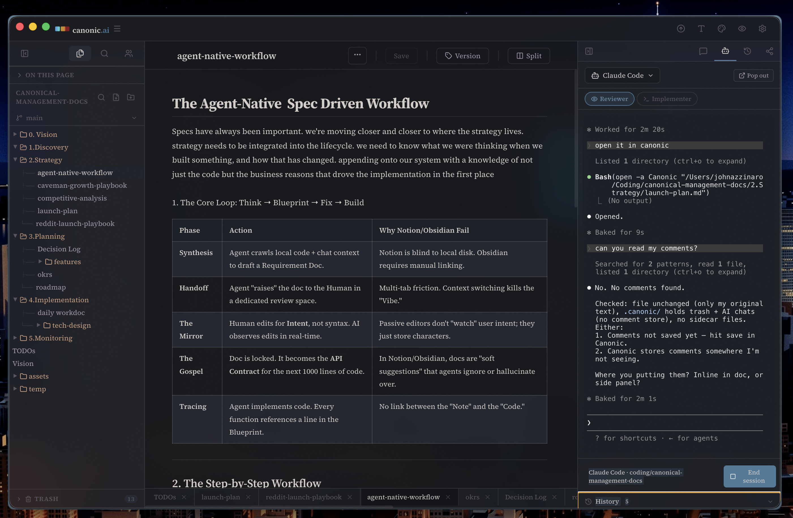

Canonic
A local-first writing workspace. Plain markdown files on your machine, versioned with Git.

Your files, in a folder you chose
Documents stay as plain markdown. Open them in any editor, sync them however you like, and keep working when the network is gone.
Versioned without a terminal
Every workspace is a Git repository. Save checkpoints, branch a document, and read its full history from the interface.
Why local-first
The first version was a SaaS. The hosted shape fought the point — a second brain for product teams should live in files the team owns. Canonic is that idea, rebuilt.
John Azzinaro · New York · johnjazzinaro@gmail.com